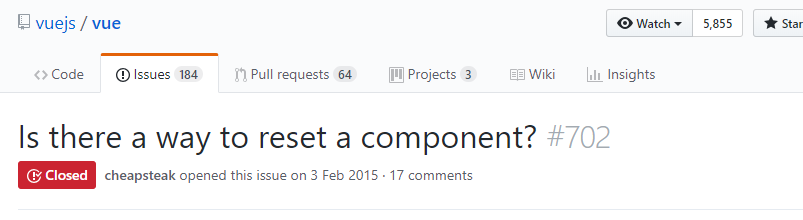

# [Vue] [筆記] Reset Data in Component
許多時候我們在 Vue 的 Form 表單中新增、修改一筆資料後，可能會希望將 from 表單的內容清除乾淨。
以前我總是會特別寫一個 Function 將預先存好的初始化 Data Form 複製一份回去，用這個方法初始化。
1
2
3function clearForm(initDataForm) {
this.dataForm = initDataForm;
}
但是，這實在是 太﹒蠢﹒了﹒
我終於不勝其擾，決定查看看其他人是怎麼做這個事情的。
結果還真的讓我發現，原來 Github 上真的有人問過這樣的問題。

https://github.com/vuejs/vue/issues/702
因此讓我得知我們可以用以下方法達成 Reset data
1
this.$data = this.$options.data();
但是，實際使用後發現， 其實 Vue 並不建議你將整個 data Reset 。
你應該只 Reset 你所需要的部分就好。
所以，我們應該將上面那行寫成這樣
1
this.$data.dataForm = this.$options.data().dataForm;
如此就能達到 Reset 的效果，而且不用再另外開一個變數去儲存 initDataForm 了。